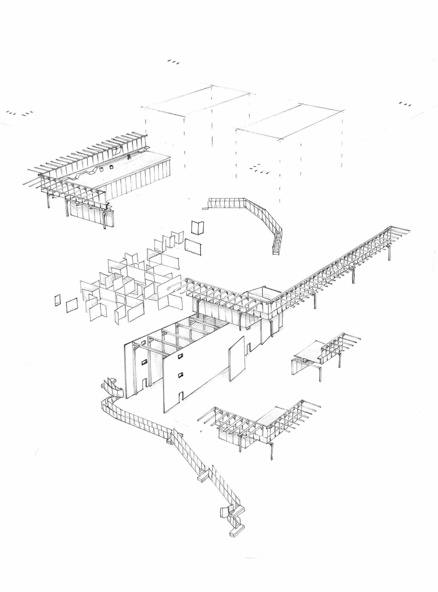
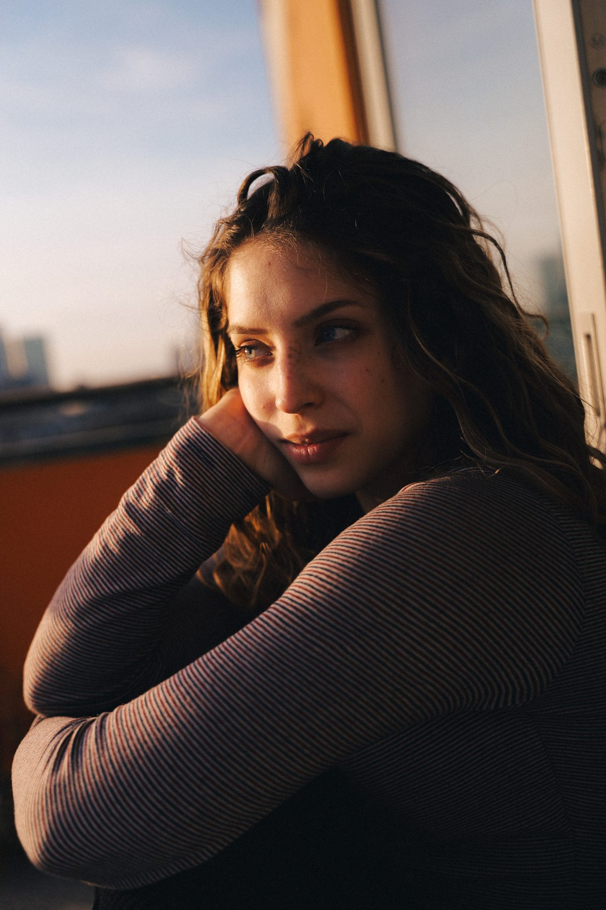
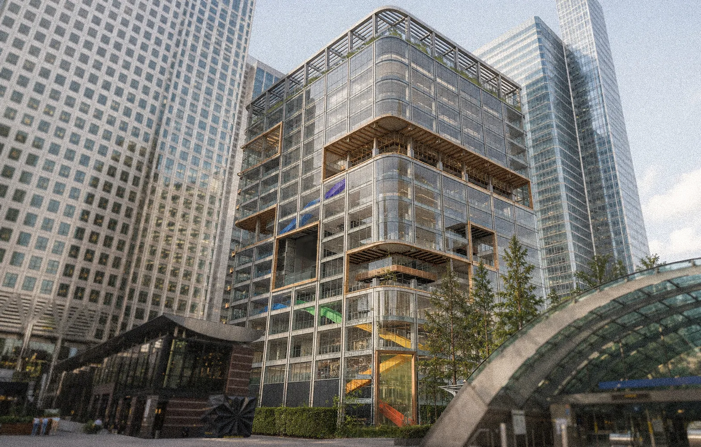
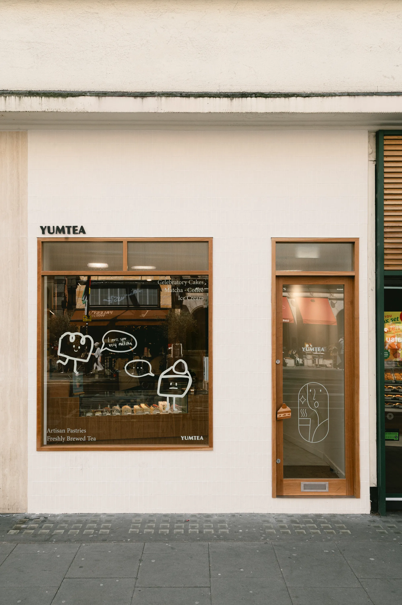
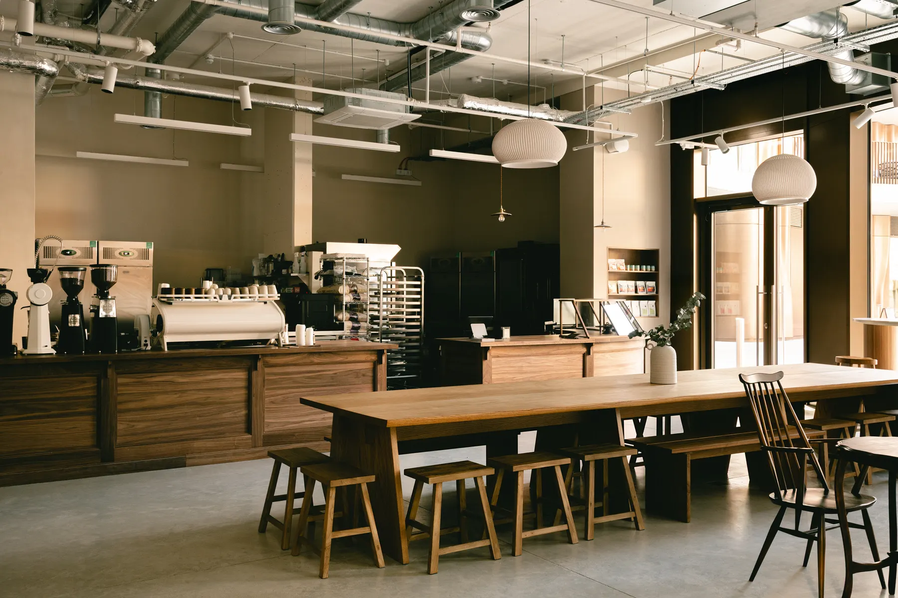
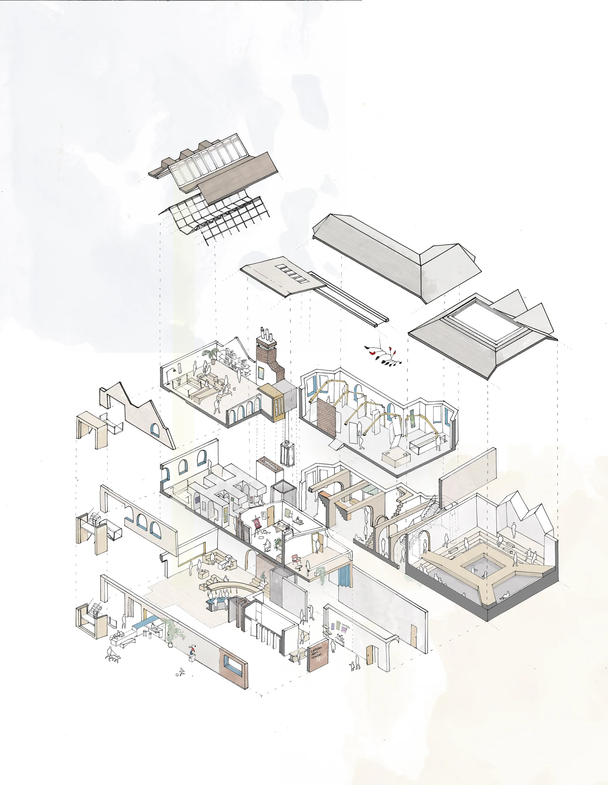
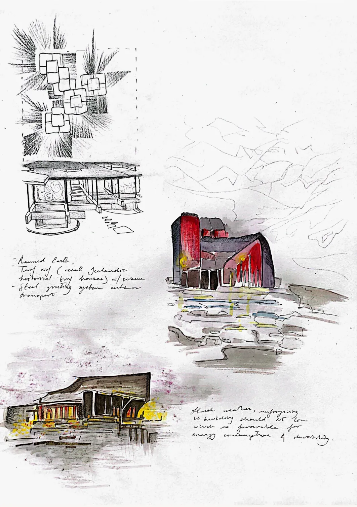

Interior Architecture & Design, London
MA Interior Design, Royal College of Art. BA Hons Interior Design & Environmental Architecture, Ravensbourne University. Two years of studio and joinery practice. Shaped by growing up between Rome and Venice, with a passion for craft, sustainability, and spatial narrative.

Profile
I'm Viola, an Italian-born interior and architectural designer finishing my MA at the Royal College of Art. My eye for space was shaped early: growing up between Rome's layered architecture and the frequent visits to the Biennales of Venice, design was never abstract. It was always somewhere you could stand inside and feel.
Educated at the American Overseas School of Rome, I bring a bilingual, cross-cultural perspective to everything I make. My practice sits at the intersection of spatial narrative, material honesty, and renovation: the belief that existing buildings hold stories worth continuing rather than erasing.
Beyond the studio I have worked hands-on: MEP drawings, bespoke joinery documentation, on-site coordination and photoshoots at EastJR made me just as comfortable on a building site as at a drawing board. Outside of work: acrobatic gymnastics, glassblowing, and a long-standing interest in neuropsychology, which feeds directly into how I think about the human experience of space.
Software & Technical
Studio & Practice
Systems & Workflow

Work
RCA MA Interior Design — Adaptive Reuse, Canary Wharf
A proposal to transform Foster + Partners' 1999 office tower at 33 Canada Square into a civic interior — inserting artist studios, joinery workshops, exhibition spaces and informal working areas across 18 floors of a building facing increasing redundancy. The project responds directly to Canary Wharf's shifting identity: with office vacancy rising and footfall increasingly non-corporate, it questions who the city is for and proposes craft and culture as a new ground floor logic. Developed as part of the RCA's SuperReuse 25–26 brief. Explores material reuse, salvage, and the idea that imperfection is a design resource rather than a problem to solve.

EastJR Studio — Commercial Interior Fit-Out, High Holborn
A contemporary Asian bakery and tea shop in High Holborn, delivered from initial concept through to completion as Design Assistant at EastJR. The brief was to create a refined, compact retail and café experience using warm materiality — cherry veneer, stainless steel, reeded glass and soft track lighting — while developing a refreshed visual identity distinct from the client's existing location. Responsibilities spanned client liaison, site surveys, 2D technical drawing production, material coordination, shopfront vinyl and branding graphics design, and on-site installation support. Completed March 2025.

EastJR Studio — Commercial Interior Fit-Out, London Bridge
Full interior design and technical delivery for Nagare Coffee's newest flagship café across 162m² at Triptych Bankside, a recently completed mixed-use development at London Bridge. The challenge was to translate the atmosphere of Nagare's original location — Japanese minimalism, slow-living, material warmth — into a space that sits within a contrasting contemporary development. Responsibilities covered RIBA stages 0–4, client meetings and surveys, 2D technical drawings, MEP coordination, bespoke joinery documentation, presentation packages and construction photography. Completed March 2025.

Ravensbourne University, Final Year — Adaptive Reuse, Catford
Final Major Project at Ravensbourne University. The Catford Constitutional Club, a locally listed Georgian and Victorian structure dating to the 1700s, is given new life as an Art Centre: café, art shop, artist studios, seminar room and exhibition spaces structured around stories from Dino Buzzati's book The Mystery Boutique. Each exhibition room is spatially conceived from a different story — the "architecturalisation of fiction" — making the building itself a narrative device. The project received the RIBA First Prize for Best Final Major Project 2023, was published on Dezeen, and was shortlisted for the IE Craft Excellence Recognition Awards. Delivered with full technical drawings, construction section details, environmental strategy and a 1:25 physical model.

Ravensbourne University, Competition Entry — Mývatn, Iceland
Competition entry for a cinema pavilion celebrating Icelandic film history, sited on the volcanic rift near Mývatn Lake in northern Iceland. The design responds to the dramatic dichotomy of the Icelandic landscape — volcanoes against glaciers, open tundra against fractured earth — treating the pavilion as a continuous framing device: every space and corridor is oriented to curate a view. Materials respond directly to context and climate: turf roofs referencing traditional Icelandic farmhouse construction, rammed earth walls for thermal mass and low embodied carbon, light timber interiors to emphasise diffuse northern light. Floor plan organised as reception, cinema room and gallery passageway, each with distinct spatial character.

For the full picture, view the portfolio
Education
Recognition